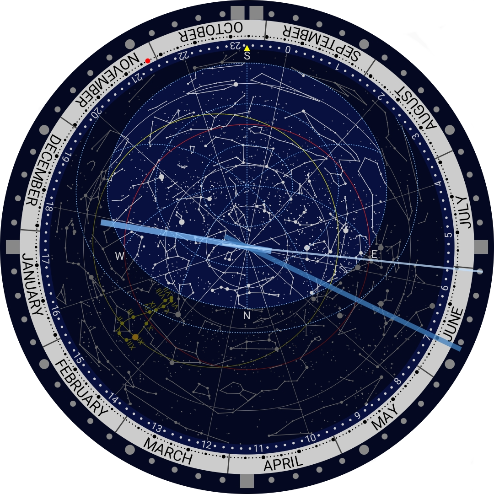

Android apps
Sky Clock
This is a clock application with a planisphere for Android. The planisphere shows the current sky at the observation location by setting the latitude and the longitude. You can switch the northern and southern celestial hemispheres.
